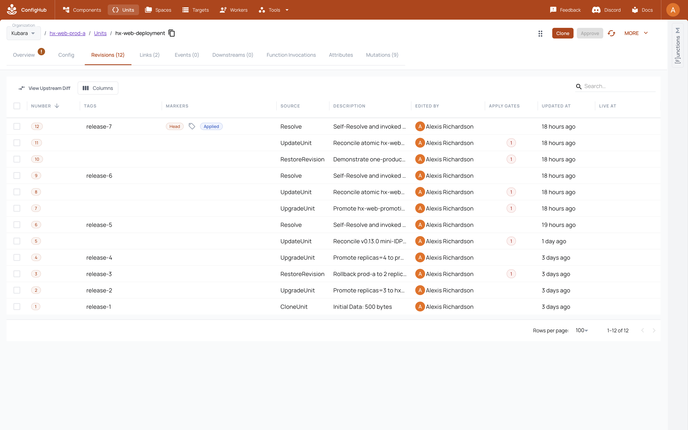

Your goal
ConfigHub governs the application revision and release. Each cluster's local Argo CD instance continues reconciling the released OCI digest. The application is not hidden inside the platform import and the importer does not invent its source code.
What stays Kubara
- The application consumes the ingress, certificate, secret, monitoring, and other services that the Kubara platform provides.
- Kubara's generated namespaces, ingress class, ClusterIssuer, and platform wiring remain meaningful to application authors.
- Argo CD remains the in-cluster reconciler and reports sync and health.
- The application source can remain in its own repository and release cadence; it is not folded into Kubara's portable platform package.
What ConfigHub adds
- A reusable application definition and four independently visible target instances.
- Exact
UpgradeUnitpromotion lineage from development to staging and two production targets. - Production approval at server-current
HeadRevisionNum, with authoritative before/after observations binding the Unit ID, observed numeric head, andDataHash. - Immutable OCI release digests and source/release history.
- A reviewed target departure that survives later upstream promotion.
- One-target rollback with the peer production target left untouched.
- Native Links from application needs to the platform services that provide them, plus a fleet matrix that shows placement and departures.
The two example applications
The current mini-IDP deliberately uses two applications:
- hx-web is the short buyer story: a small digest-pinned NGINX Deployment and Service, plus an Ingress and Certificate that use shared Traefik and cert-manager services. It exercises promotion, production approval, a staging-only departure, and a one-target rollback.
- Cubbychat is the richer topology: digest-pinned Postgres, backend, and frontend workloads plus platform Ingress and Certificate resources. It shows that the same approach is not limited to a one-pod demonstration.
Review their exact source before applying anything:
examples/kubara/current-platform/apps/hx-web/base/
examples/kubara/current-platform/apps/hx-web/platform/
examples/kubara/current-platform/apps/cubbychat/base/
examples/kubara/current-platform/apps/cubbychat/platform/The committed Cubbychat credential is explicitly demo-only. A real adopter must use their secret-management workflow and keep secret values outside the portable Git/OCI platform hand-off.
Before you start
- Step 5's exact platform apply receipt must pass after the zero-action second run.
- Every required platform Application must be at its exact release digest and meet its
Synced/health contract. - The target-fact and secret providers used by the application must exist.
- The production approval policy and reviewers must be configured before a production release is attempted.
- The four persistent example clusters must be reachable if reproducing the current mini-IDP.
Do not use application success to paper over a platform checkpoint that has not passed. The app is the consumer proof after platform convergence.
6.1 Keep application source separate
Create or reuse an application definition Space from reviewed application source. Bind only target-neutral manifests in the definition. Put platform bindings such as Certificate and Ingress into their reviewed application configuration rather than copying a platform controller into the app.
If an application Application already exists in an apps-root Space, declare it under delivery.workloadApplications in the import request before completing Step 5. Rerun destination inspection so the importer pins its Unit ID, DataHash, raw-byte hash, published head, source IDs, and release manifest digest. That preservation changes only BindingDigest, not PlatformDigest or target-neutral package bytes.
6.2 Create the promotion topology
Create one target instance for each environment and retain explicit lineage:
application definition
|
v
development -> staging -> production A
`-> production BFor the example, hx-web uses the definition Space hx-web-base and instance Spaces hx-web-dev, hx-web-staging, hx-web-prod-a, and hx-web-prod-b. Cubbychat follows the same four-target placement. Separate platform-binding instances make each app's Certificate and Ingress relationship visible without mixing those resources into the portable platform import.
6.3 Release to development first
Publish the exact reviewed development revision. Publication makes the release discoverable; it does not authorize Argo to deploy mutable latest. The managed delivery Application retains spec.source.targetRevision: latest only for discovery and has no spec.syncPolicy.automated field. The pinned argobot v0.1.6 runtime (ARGO_SYNC_MODE=kubernetes, ARGO_NAMESPACE=argocd, ARGO_REFRESH_TYPE=hard) may hard-refresh that Application, but cannot sync it.
The ConfigHub reconciler then revalidates the exact authoritative release and Unit heads, accepts no active Argo operation, and submits operation.sync.revision=<ManifestDigest> using Kubernetes metadata.uid/metadata.resourceVersion compare-and-set. Require the delivery Application to observe that exact digest, then require Synced and the workload health named by its contract. This preserves Argo as the familiar cluster-local reconciler while preventing a changed latest pointer from bypassing review, approval, or promotion.
Treat retained release-N Tags as navigable history, not as deployment authority. The exact OCI ManifestDigest is the release identity submitted to Argo. The managed path also inventories Applications across every namespace and rejects ApplicationSets, so a second declarative owner cannot hide outside the normal argocd view.
Only after development passes should the same reviewed source move to staging. Promotion is an exact upstream-to-downstream operation, not a rebuild from a mutable tag.
6.4 Promote to staging and retain one departure
Promote the exact development revision into staging. In the hx-web example, staging also receives one reviewed SANDBOX_URL environment variable as a Space-local departure. A later base promotion must update the shared content while retaining that staging-only field.
The machine proof rejects a departure that leaks into development or either production target, or disappears during the later promotion.
6.5 Require exact approval before production
ConfigHub's approval gate prevents publication of an unapproved production revision. In the repeatable live run, do not issue a negative publish because that command has no revision compare-and-set and could race an external approval. Instead, observe the same gated heads through two authoritative reads. ConfigHub v0.2.11 rejects a literal numeric approval revision, so the approval command identifies the Unit by slug and uses the proven server-current-head selector --revision HeadRevisionNum. The reconciler accepts that operation only when authoritative reads immediately before and after preserve the same Unit ID, observed numeric head, and DataHash, the gate clears, and the approval count advances exactly once. This is bracketed exact-head evidence, not a server compare-and-set guarantee from the approval API: another writer can still race and cause a wrong-head side effect before the post-read detects it. Hold serialized ownership with no competing writer. After approval, publish the same reviewed revision to both production targets. Explain the refusal behavior; show the safer gate observation and exact approval evidence.
An approval for an older revision is not reusable authority for a changed revision. A ConfigHub release is also not proof that Argo has reconciled it; retain the exact downstream observation separately.
6.6 Roll back one target without moving its peer
Restore production A to its exact earlier accepted revision and publish that release. Production B remains on the promoted revision. Record both the source and result Unit heads and release digests so the GUI can show that this was a one-target rollback, not a new hand-edited payload.
The expected final hx-web shape in the current scenario is:
| Target | Final state |
|---|---|
| Development | Three replicas at promotion v2; no staging departure. |
| Staging | Three replicas at promotion v2; retains only SANDBOX_URL. |
| Production A | Rolled back to the exact two-replica initial rollout. |
| Production B | Remains at the three-replica promotion-v1 revision. |
6.7 Run the reusable adopter application sequence
Start from the checked app-release.example.yaml. The request binds the exact ConfigHub Organization coordinate and spaceReleaseOCIBase; every target binds its ConfigHub Target ID, Kubernetes context, exact kube-system Namespace UID, Argo namespace, and root Application as well as its exact source Unit head and release digests. The OCI origin is never inferred from serverURL and is included in the release digest.
node scripts/compile-kubara-app-release.mjs --compile \
--request /controlled/import/payments-release.yaml \
--output /controlled/import/payments-release
node scripts/compile-kubara-app-release.mjs --verify \
--request /controlled/import/payments-release.yaml \
--output /controlled/import/payments-release
node scripts/run-kubara-app-release.mjs --execute \
--request /controlled/import/payments-release.yaml \
--output /controlled/import/payments-release \
--acceptance-evidence /controlled/evidence/payments-live.jsonThe executable runner uses a durable prepared-before-write journal. It revalidates the exact ConfigHub coordinate before every ConfigHub mutation, derives and compares the canonical plan and delivery bytes from the exact request, and writes one immutable evidence file for every attempt. Each source Space must contain exactly its one request-bound deployable Unit. After publishing the delivery root it first fences the live root Application to the exact apps-root ManifestDigest with automated sync absent. It waits for that exact root to materialize the workload Application, then submits the workload's exact source digest. Both cluster writes use Kubernetes UID and resourceVersion JSON Patch tests. A concurrent change fails the compare-and-set rather than being overwritten.
The local PID lock covers only processes that share the same compiled output directory on one host/filesystem. It does not serialize another output directory, host, or writer against the same ConfigHub Spaces and Argo Applications. Operate this sequence under one external writer/lease for those request-bound resources. ConfigHub approval and publish operations are read-bracketed but are not transactionally CAS-bound to the pre-read.
If either reconciler has not converged, the runner exits pending at the next journal step. Rerun the identical command; it resumes by inspecting live state, not by blindly replaying the prior write. It emits acceptance only after both Applications are exact-revision, Synced, and Healthy, followed immediately by a read-only zero-action audit. Verify the bound evidence with:
node scripts/run-kubara-app-release.mjs --verify-acceptance \
--request /controlled/import/payments-release.yaml \
--output /controlled/import/payments-release \
--acceptance-evidence /controlled/evidence/payments-live.jsonThis generic contract proves the executable argo-synced-and-healthy-exact-source-manifest health boundary. Application- specific endpoint, database, or business checks are additional evidence; the runner does not infer them from Argo health.
6.8 Run the current example's richer application sequence
The current repository automates the preceding application operations inside the complete mini-IDP reconciler rather than asking a user to replay dozens of manual mutation commands:
npm run kubara-mini-idp:plan
npm run kubara-mini-idp:apply
npm run kubara-mini-idp:apply
npm run kubara-mini-idp:verify
npm run kubara-mini-idp:receipt-verifyThe first apply uses a durable write-ahead operation journal for every hx-web promotion, gate observation, approval, departure, publication, and rollback transition. If interrupted, rerun the exact same command and inputs. Do not manually replay the remaining history; the journal accepts only the exact durable prefix.
The second apply is mandatory and must make zero semantic changes. The receipt distinguishes an executed scenario from retained, already-proved history so reconciliation does not manufacture duplicate promotions on every run.
The same durable journal records 16 reviewed immutable-selector replacements required to bring a retained fleet to the current hx-web and Cubbychat label contract. Four are hx-web Deployments; the other 12 are Cubbychat backend, frontend, and PostgreSQL workloads across four targets. The retained v1 history honestly preserves the trigger used at the time: four recovery rows followed an Argo resource failure and 12 used the earlier reviewed-preflight path. Those completed rows are not rewritten. For every new attempt, the v2 policy first submits the exact expected OCI revision and requires Argo to record that exact resource's terminal immutable-selector failure, with the failure object and digest journaled. Only then may the old resource be deleted with exact UID/resourceVersion preconditions; the replacement must be healthy with ready endpoints. Each PostgreSQL replacement preserves the same bound PVC UID and volume identity. This is migration evidence for an existing platform, not an ordinary rollout pattern and not permission for broad deletion.
After application and platform convergence, run the Step 5 orphan audit before publishing the GUI tour or fleet matrix as current.
6.9 Verify the actual applications
For each hx-web and Cubbychat target, require all of the following:
- the ConfigHub release manifest digest equals the digest expected by the current plan and receipt;
- Argo reports that exact digest, not an older
Syncedrevision; - sync is
Synced; - health meets the reviewed application contract;
- the expected workloads, Services, Ingresses, and Certificates exist; and
- native Links connect the application needs to the selected platform providers.
Once the current receipt passes, the local kind example can also be exercised through its reviewed NodePorts:
curl -H 'Host: hx-web.local' http://127.0.0.1:30002/
curl --insecure --resolve cubbychat.local:30003:127.0.0.1 \
https://cubbychat.local:30003/Use Traefik port pairs 30012/30013, 30022/30023, and 30032/30033 for staging, production A, and production B. Their first window ports (30010, 30020, and 30030) remain reserved for argocd-server. --insecure is acceptable only for this explicitly self-signed local proof.
Expected state and evidence
The accepted current example must show:
- hx-web and Cubbychat definition and per-cluster instance Spaces;
- both apps delivered to development, staging, production A, and production B;
- exact source revisions and OCI digests for every target;
- stable production gate observations followed by server
HeadRevisionNumapprovals bracketed by unchanged Unit ID, observed numeric head, andDataHash; - one retained staging departure;
- one exact rollback on production A while production B remains promoted;
- current Argo sync and workload health at the exact release digests;
- curated app-to-cert-manager and app-to-Traefik Links; and
- a scoped ConfigHub/Argo/workload residue audit after convergence.
The passing current evidence belongs in:
runs/kubara-mini-idp-reconcile/receipt.yaml
runs/kubara-mini-idp-reconcile/orphan-audit.yamlThe source-current mini-IDP receipt now reports pass and proves current v0.13 app health, exact-head approval evidence, promotion, retained departure, one-target rollback, immutable releases, selector migrations, and the immediate zero-action rerun. The scoped residue claim and screenshot publication remain separate: they require the source-current orphan receipt and the pre-capture evidence gate rather than being inferred from application health.
There is a real retained v0.12 compatibility proof at runs/kubara-app-rollout-proof/receipt.yaml. Verify it with:
npm run kubara-app-rollout:verifyThat historical receipt proves the earlier promotion, approval, rollback, departure, and four-cluster application behavior. It must be labelled historical and cannot substitute for the current v0.13 checkpoint.
Machine checkpoint
The current application checkpoint is:
npm run kubara-mini-idp:receipt-verify
npm run kubara-mini-idp:orphan-audit:receipt-verifyBoth must pass for the same source commit. Then regenerate the live-aware matrix:
npm run kubara-platform-matrix:generate
npm run kubara-platform-matrix:verifyThe matrix must leave any field without exact receipt evidence unknown. Each cell carries two explicit planes: Kubara/ConfigHub desired placement, selected version, and departure; then the receipt's exact ConfigHub release digest, Argo observed revision/sync/health, and Kubernetes desired/ready counts. A disabled selection is NotApplicable. A desired-only cell is useful deterministic evidence, but it is not a live application-health claim.
Screenshot to capture after the checkpoint passes
Do not use the historical GUI or generated desired state as a current screenshot. This chapter owns exactly one future adoption frame, separate from the ConfigHub GUI tour.

After the current receipts, the GUI tour's pre-capture gate, and the complete source-current live gate pass, capture one real ConfigHub browser frame with hx-web open and these identities visible in the application and history surfaces:
- development, staging, production A, and production B placement at exact source revisions and OCI digests;
- the exact production revision/data hashes and approval;
- staging's retained
SANDBOX_URLdeparture after promotion; - production A's rollback source/result beside production B's unchanged promoted head; and
- current Argo revision,
Synced, and accepted health for the selected live result.
Use the surrounding tutorial, rather than extra adoption frames, to point to Cubbychat's three-tier topology as evidence that the model handles a richer application. The caption must name the source commit, organization, accepted receipt, and capture date, and must state which parts prove governance, release identity, and live cluster health. Embed the real frame at the declared path only when the six-frame adoption receipt binds the exact source commit and Git trees, mini-IDP and orphan receipts, matrix and wiring hashes, image digest, UTC capture time, visible identities, sensitive-value handling, caption, and claim boundary. Until then, leave the hook unexpanded.
Troubleshooting
| Symptom | What it means | Safe response |
|---|---|---|
| The platform has not converged | Application prerequisites are not ready. | Stop application promotion and finish Step 5. Do not treat a running app as proof of a healthy platform. |
| Production publication returns an approval refusal | The exact production heads are not approved. | Treat the refusal as expected policy evidence, approve the exact Unit revisions/data hashes, then republish without changing them. |
Argo says Synced at another digest | The cluster is observing an older release. | Reconcile the exact current ConfigHub release and verify its digest before assessing health. |
Argo stays Progressing | Controller aggregate health has not met the contract. | Inspect the Application and Kubernetes workloads; retain watch or fail rather than writing pass. |
| The staging departure vanished or appeared elsewhere | Promotion or merge-base semantics are wrong. | Stop, retain the evidence, and repair the reviewed lineage. Do not re-add the field manually after promotion. |
| Production B moved during production A rollback | Rollback scope was not isolated. | Stop the demo and investigate exact Unit/release heads; both targets must not be called correct. |
| A rerun tries to replay part of hx-web history | The durable operation journal and live state disagree. | Preserve the journal and receipts and fail closed. Do not delete markers or manufacture a new history. |
curl cannot reach the kind app | NodePort, Host/SNI, Certificate, Service, or workload convergence is incomplete. | Check the exact target's Argo Application and Kubernetes resources. Do not weaken the live checkpoint to pod-only health. |
| Receipt verification reports a missing file | That separate evidence boundary has not run for the current source. | Keep only the claims supported by the receipts that do pass; run the missing serial qualification and never infer orphan or screenshot evidence from the app receipt. |
Safe to stop
It is safe to stop after a fully verified development or staging release; do not begin production until the approval policy is in place. If the scripted hx-web governance scenario is interrupted, preserve its operation journal and rerun the same kubara-mini-idp:apply. The journal is the recovery authority.
After the first complete mini-IDP apply, stop only with the result clearly marked pending idempotence. The immediate second zero-action apply and receipt verification are required before publishing evidence. Never delete the four persistent example clusters as tutorial cleanup.
Previous: Step 5 - materialize the selected organization
Next: walk through the proved result in the ConfigHub GUI, then consult the evidence checkpoint ledger.